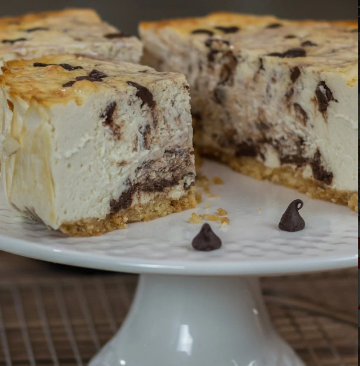

Protein Cheesecake

Description:
High protein cheesecake, great if you want to eat something sweet and filling without missing on the proteins!
Ingredients:
- 350g Fat free cream cheese
- 350g Fat free greek yogurt
- 2 Large eggs
- 60g Protein powder
- 100g Erythritol
'
- 1/2 Teaspoon salt
Steps:
- Heat oven to 160°C
- Mix all ingredients together för 2-3 minutes with a mixer
- Use a 15x5cm cake pan, apply parchment paper to the cake pan
- Pour the mix in the pan
- Cook for 30-35 minutes, the 50-15 minutes at 100°C
- Do toothpick test to see if the inside is done, then wait for 2-3 hours before eating